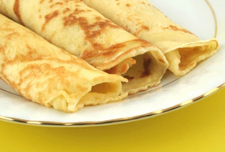

Von diesen einfachen Palatschinken können Ihre Lieben nicht genug
bekommen. Überzeugen Sie sich doch selbst von dem Rezept.

Zutaten für 6 Personen
Menge
Einheit
Zutat
250
g
Mehl
2
Stk
Eier
500
ml
Milch
1
Prise
Salz
1
Schuss
Öl (oder Butter)
Zubereitung
Für die Palatschinken zuerst Mehl, Milch, Eier, Salz mit dem
Schneebesen in einer Schüssel glatt rühren. Ca. 10 Min. stehen lassen,
dadurch wird der Teig etwas dicker und danach nochmals gut
durchrühren.
Sollte der Palatschinkenteig zu dick sein, mit etwas Mineral oder Soda
verdünnen.
In einer beschichteten Pfanne einen Schuss Öl erhitzen (das Öl sollte
ganz heiß sein, dann gelingt die erste Palatschinke sofort). Dann
etwas Teig (mit einem Schöpfer) in die heiße Pfanne hineingegeben. Die
Pfanne dabei immer wieder schwenken, sodass der Boden gleichmäßig dünn
mit Teig bedeckt ist.
Mit dem Pfannenwender die Palatschinke mehrmals wenden und von beiden
Seiten goldgelb ausbacken.
Die Fertig gebackenen Palatschinken halten sie im Backofen bei ca. 60
Grad warm.
Mit beliebigen Zutaten (Marmelade, Nutella, Schinken & Käse etc.) die
Palatschinken bestreichen und zusammenrollen.